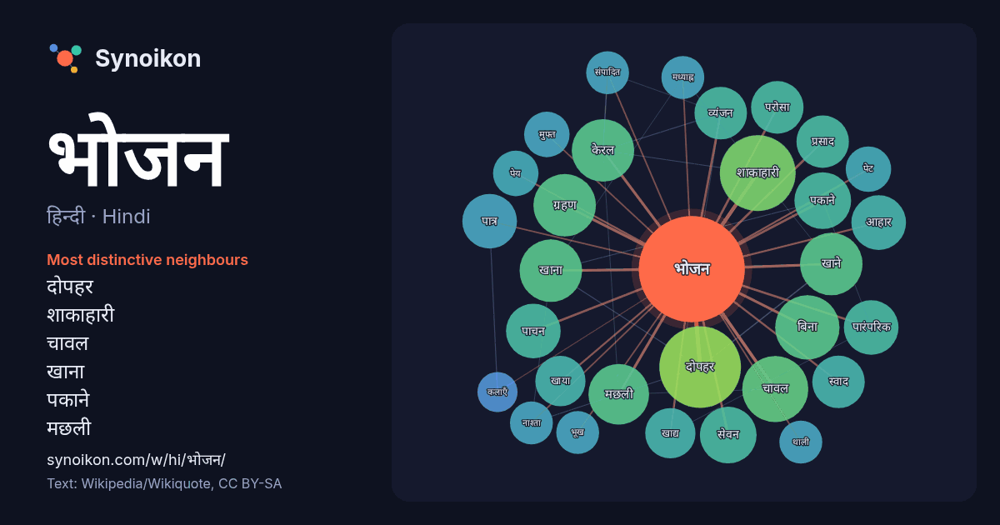

हिन्दी · Hindi · popular word
भोजन
“food” · The words found around it in 1060 instances from Hindi Wikipedia, Wikiquote.

Most distinctive neighbours
- दोपहर 26×
- शाकाहारी 24×
- चावल 16×
- खाना 15×
- पकाने 14×
- मछली 14×
- केरल 14×
- खाने 14×
- पाचन 13×
- परोसा 12×
- सेवन 12×
- ग्रहण 12×
- आहार 11×
- खाया 11×
- व्यंजन 11×
- स्वाद 11×
- पात्र 10×
- प्रसाद 9.6×
- खाद्य 8.9×
- मुफ्त 8.9×
× = how many times more often than in general Hindi Wikipedia text.
Most frequent neighbours
- समय 33
- भारतीय 31
- दोपहर 29
- मुख्य 26
- शाकाहारी 25
- प्रकार 24
- चाहिए 20
- चावल 19
- भारत 19
- विशेष 19
- बिना 18
- केरल 17
- खाना 17
- खाने 17
- ग्रहण 17
- मछली 16
- वाला 16
- शरीर 16
- स्वयं 16
- जिसमें 15
In context
- भोजन (Meal) खाना ग्रहण करने का अवसर होता है, जिस समय कोई प्राणी अपने पोषण के लिए खाना खाता करता है। मानव समाज में दिन के अलग-अलग समय के भोजन के लिए अक्सर Wikipedia snippets · भोजन
- जैन भोजन की समाविष्टि जैन धर्म के अंतर्गत हुई हैं, जो सात्विकता से परिपूर्ण, अहिंसक शाकाहारी भोजन हैं। जैन भोजन न केवल मांसाहार का त्याग करता हैं, बल्कि Wikipedia snippets · जैन भोजन
- केरलीयों का प्रमुख भोजन चावल है। मलयाली साग-सब्जियाँ, मछली, मांस, अंडा इत्यादि से बनी सब्जियों से मिलाकर चावल खाना पसन्द करते हैं। गेहूँ, मैदा आदि भी केरलीयों Wikipedia snippets · केरल का भोजन
- तेलुगु भोजन भारत के आंध्र प्रदेश राज्य के लोगों द्वारा खाये जाने वाले विभिन्न खाद्य-पदार्थों को संदर्भित करता है। चावल तेलुगू भोजन का मुख्य आहार है और Wikipedia snippets · तेलुगु भोजन
- मध्याह्न भोजन योजना, भारत सरकार की एक योजना है जिसके अन्तर्गत पूरे देश के प्राथमिक और लघु माध्यमिक विद्यालयों के छात्रों को दोपहर का भोजन निःशुल्क प्रदान Wikipedia snippets · मध्याह्न भोजन योजना
- भोजन मंत्र भोजन करने से पहले पढ़ा जाने वाला एक मंत्र है। यह प्राचीन भारतीय परंपरा के अनुसार प्रचलित है। भोजन मंत्र केवल धार्मिक अनुष्ठानों का हिस्सा नहीं Wikipedia snippets · भोजन मन्त्र
- हलाल भोजन (Halal food) - इस्लामी न्यायशास्त्र में इस्लामी आहार कानून निर्दिष्ट करता है कि कौन से खाद्य पदार्थ हलाल ("वैध") हैं और जो हराम ("अवैध") हैं। Wikipedia snippets · हलाल भोजन
- भोजन शिष्टाचार खाते समय पालन किये जाने वाले शिष्टाचार के वे नियम हैं, जिनमें बर्तनों का सटीक उपयोग भी शामिल हो सकता है। विभिन्न संस्कृतियां भोजन शिष्टाचार Wikipedia snippets · भोजन शिष्टाचार
More Hindi words
- इतिहास
- ईश्वर
- कार्य
- कुत्ता
- गर्मी
- गाना
- घंटी
- घड़ी
- घोड़ा
- चाय
- चित्रकला
- छाया
- जंगल
- जलवायु
- जीवन
- तूफ़ान
- दर्पण
- द्वीप
- नक्षत्र
- नमक
- परिवार
- पहाड़
- पानी
- पैसा
- प्रकृति
- बगीचा
- बिल्ली
- भाषा
- माता
- मानचित्र
- मृत्यु
- मौन
- रेगिस्तान
- रेलगाड़ी
- रोटी
- वर्षा
- विज्ञान
- शक्ति
- शरद
- शहद
- शहर
- सड़क
- सत्य
- समय
- सर्दी
- सेतु
- स्वर्ण
- स्वास्थ्य
- हृदय
Precomputed on 2026-10-09 with default settings (±5 words, medium corpus). The interactive map can refresh it with live data.